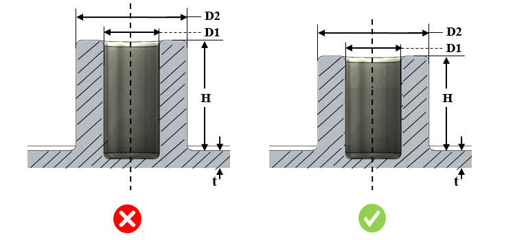

ボスに関連する寸法（高さと外径の比、ボス外径と内径の比など）は、指定された値である必要があります。
ボスは、取り付けが必要な部品のスタンドオフや取付ポイントとして機能するために、ダイカスト品に追加されます。ダイカストの完全性と強度を最大限に確保するためには、ボスは均一な肉厚を持つ必要があります。
背の高いボスは、適切な抜き勾配を持って設計されるため、基部に厚肉部が形成されます。これは冷却に影響を与え、ボイドやヒケの発生につながります。
外径と内径の比率に関しては、荷重がかかった際に十分な強度を維持できることを保証することが極めて重要です。そのため、弱いボスを避けるために、外径と内径の比率は規格に従う必要があります。
ボス外径と内径の比率は、2.5 以下である必要があります。
ボス高さと外径の比率は、1.0 以下である必要があります。
ボス高さと公称肉厚の比率は、5.0 以下である必要があります。
DFMPro はボス形状を識別し、高さと外径の比率を確認したうえで、構成された値と照合して検証します。同様に、DFMPro はボスの外径および内径も算出し、その比率を構成された値と比較して検証します。
ユーザーは、デフォルトで構成されている比率を編集することができます。
ルール UI では、材料の一覧が 材料マッピング から読み込まれ、ユーザーは材料およびその値を構成することができます。
材料とその値を構成した後、ユーザーは Ctrl+M コマンドを使用して、ルール UI 上で材料グループおよびグレードとともに、構成済み材料の一覧をフィルタリングして表示できます。同じキー（Ctrl+M）を使用して、フィルタをリセットすることができます。

D1 = 内径
D2 = 外径
H = ボス高さ
t = 公称肉厚